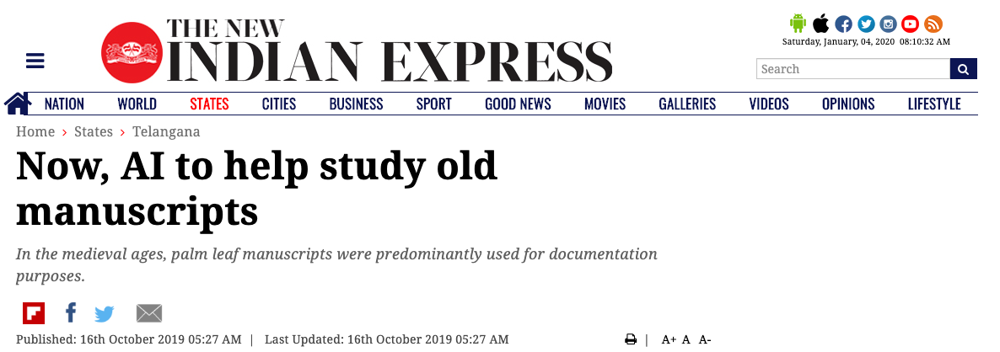
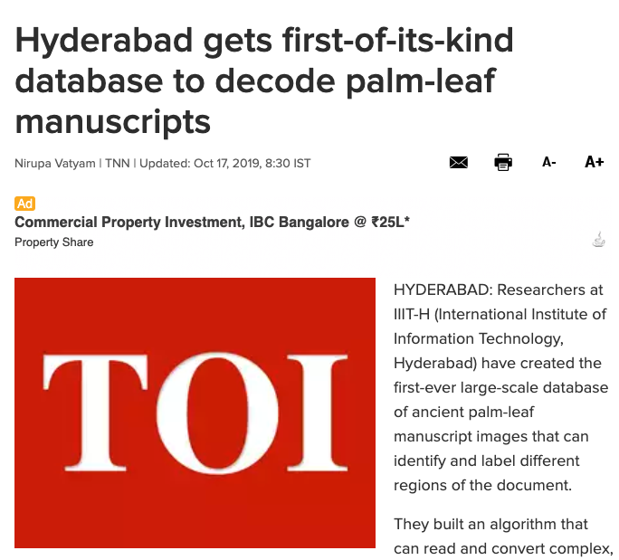
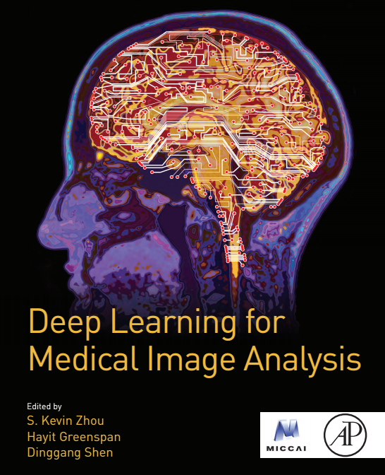

My work is primarily in the area of Computer Vision and applied Machine Learning. I have broad-ranging research interests and like to work on inter-disciplinary problems involving multi-modal multimedia data (e.g. images,videos, text, audio/speech, eye-tracking data) and disciplines (e.g. Humanities, Graphics, Robotics, Human-Computer Interaction).
For details of related projects and other past research, click here.
| Jan 5, 2020 | I will be serving as Executive Program Director for TalentSprint/IIIT-H Foundations of Artificial Intelligence & Machine Learning Advanced Certification Program. | ||
| Dec 17, 2019 | My Q&A session on Activity Tracking in Industry 4.0 as part of Let's Talk AI series by IIIT-H faculty. Watch the video below: | ||
| Dec 10, 2019 | Paper accepted for publication in the IEEE Transactions on Information Forensics and Security journal. | ||
| Dec 1, 2019 | ETV Telangana (cable TV channel) covered our work on historical manuscript analysis in Yuva, a daily segment which covers young achievers. Watch the video below (in Telugu) and click on images for news articles. | ||
|  | . | ||
| Sep 15, 2019 | I will be serving as Publicity Chair for 13th International Conference on Signal Processing and Communications (SPCOM-2020) conference. |
| Oct 17, 2018 | Journal version of AAAI-18 paper accepted for publication in Transactions on Pattern Analysis and Machine Intelligence (TPAMI) | |
| Sep 29, 2018 | Lecture at TalentSprint/IIIT-H Foundations of Artificial Intelligence & Machine Learning Advanced Certification Program. | |
| Sep 5, 2018 | I will be serving as a Program Committee member for AAAI 2019. | |
| Aug 30, 2018 | I will be serving as a Reviewer for ACCV 2018. | |
| Jul 28, 2018 | Lecture at TalentSprint/IIIT-H Foundations of Artificial Intelligence & Machine Learning Advanced Certification Program. | |
| July 9, 2018 | Joined IIIT-Hyderabad as an Assistant Professor. | |
| Jul 7, 2018 | Lecture at TalentSprint/IIIT-H Foundations of Artificial Intelligence & Machine Learning Advanced Certification Program. | |
| Jul 2, 2018 | Lecture at 3rd Summer School on Computer Vision, IIIT-Hyderabad. | |
| Jun 15, 2018 | I will be serving as a Program Committee member for 6th ACM IKDD CoDS and 24th COMAD - 2018. | |
| Jun 13, 2018 | I will be serving as a Reviewer for ACM SIGGRAPH Asia 2018. | |
| May 30, 2018 | I will be serving as a Reviewer for ICVGIP 2018. | |
| Apr 14, 2018 | Talk at IIIT-Hyderabad. | |
| Mar 7, 2018 | Talk at IIT-Bombay. | |
| Feb 19, 2018 | Talk at IIT-Delhi. | |
| Jan 29, 2018 | I will be serving as a Program Committee member for IJCAI-ECAI 2018. | |
| Jan 18, 2018 | Talk at Adobe Research, Bangalore. | |
| Nov 8, 2017 | Paper accepted at AAAI-2018. | |
| Sep 18, 2017 | Invited presentation at Amazon India Artificial Intelligence Summit 2017. | |
| July 2, 2017 | Paper accepted at ACMMM-2017. | |
| June 16, 2017 | Gave an invited talk : "R for Image Processing and Pattern Recognition" at Raghu Engineering College, Visakhapatnam. | |
| Feb 27, 2017 | Paper accepted at CVPR-2017. | |
| Feb 26, 2017 | Gave an invited talk on Recurrent Neural Networks at Bangalore Computer Vision Meetup. View the talk here: Part-1, Part-2. | |
| Feb 13, 2017 | Paper accepted for publication in the IEEE Transactions on Image Processing journal. | |
| Feb 4, 2017 | Book on Deep Learning for Medical Image Analysis, containing a co-authored invited chapter, has been published by Elsevier.  |
Feb 2-7, 2017 | Co-organized the Deep Learning Tutorial for Qualcomm Research India, Bangalore. |
| Dec 27, 2016 | Invited Poster presetation at Mysore Park Workshop on Vision, Language and AI (VLAI) 2016. | |
| Dec 14, 2016 | Talk at Qualcomm Research India, Bangalore. | |
| Oct 10, 2016 | Paper accepted at ICVGIP-2016 | |
| Aug 15, 2016 | Paper accepted at ACCV-2016 | |
| June 25, 2016 | 3 papers accepted at ACMMM-2016 | |
| June 20, 2016 | Awarded the prestigious Qualcomm Innovation Fellowship 2016. My one-person team proposal was one of the 4 proposals selected from 31 proposals across India. | |
| Feb 16, 2016 | Selected for TCS Ph.D. fellowship -- one of the 3 recipients in IISc for the 2016 cycle. | |
| Jan 07, 2016 | Invited talk as part of the seminar for Video Analytics and Deep Learning at MS Ramaiah Institute of Technology, Bangalore. | |
| Dec 10, 2015 | Survey paper on Convolutional Neural Networks accepted for publication at Frontiers in Robotics and AI. | |
| Oct 07, 2015 | Expresso, a co-designed open-source software for GUI-based design and analysis system for Convolutional Neural Networks, accepted for the ICCV 2015 demo track. | Aug 12, 2015 | Invited talk at IIIT-Bangalore. |
| Jul 10, 2015 | Paper accepted for oral presentation at ACMMM-2015 | |
| Aug 1, 2014 | Joined Indian Institute of Science. |
Website template taken from Sanja Fidler's website .